Learning Administration Dashboard
Description
This dashboard is designed to provide the user with intelligence around Learning Administration.
Allocation
This dashboard is available to the following URPs:
XXX BI Administration
XXX Learning Administration
XXX Class Administration
XXX Learning Instructor (only Delegate Status, Class Listing and Sign-In Sheet analyses are available to this URP)
Please note that Learning Instructor and Class Administration URPs only see classes (and delegates) with whom they are associated.
Prompts
Course
Class Status
Enrolment Status
Class Start Date Between
Category
Sub-Category
Delivery Mode
Class Title
Staff Group
Organisation
Assignment Category
Assignment Status
Enrolment Status
Organisation Levels 1-13
Index
Description
Learning reports are available in four different categories below:
-
Class Management
-
Learning History
-
Analysis
-
e-Learning
-
Apprenticeships
From this tab users are able to click on links provided to navigate to each report.
Example Screenshot
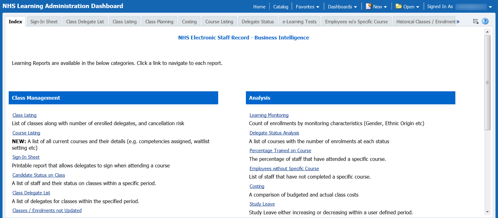
Sign-In Sheet
Description
This tab provides users with an exportable Class Sign-In Sheet. Users are able to select a date range for classes and an Enrollment Status of their choice (Default: Confirmed).
Data Items
| Employee Number | Delegate Name |
|---|---|
| Position | Organisation |
| Telephone | |
| Role | Staff Group |
| Course | Date |
| Time | Enrolment Status |
| Location | Class Name |
Prompts
*Class Date Between
Course
Class
*Enrolment Status (Default: Confirmed)
Example Screenshot
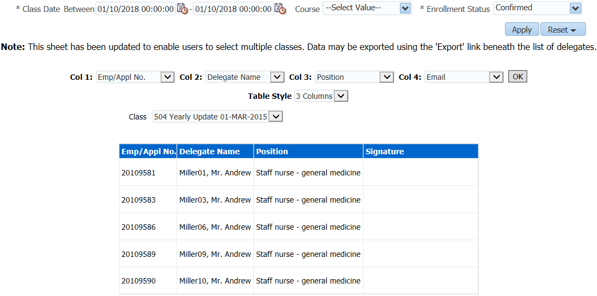
Course Calendar
Description
This tab provides users with an exportable Course Calendar. The analysis shows Courses and numbers of Booked or Available Places for associated Classes running over a period of time, defaulted to current month but with option to change to any period.
Data Items
| Title | Description |
|---|---|
| Course | |
| Course Start Month | |
| Course Start Day of Month | |
| Course Start Day Name | |
| Booked Places | Number of confirmed enrolments for the class(es) associated with each Course |
| Available Places | Number of remaining places for the class(es) associated with each Course |
Prompts
Course
Delivery Mode
Class Date Between
View Selector
Booked Places
Available Places
Example Screenshot
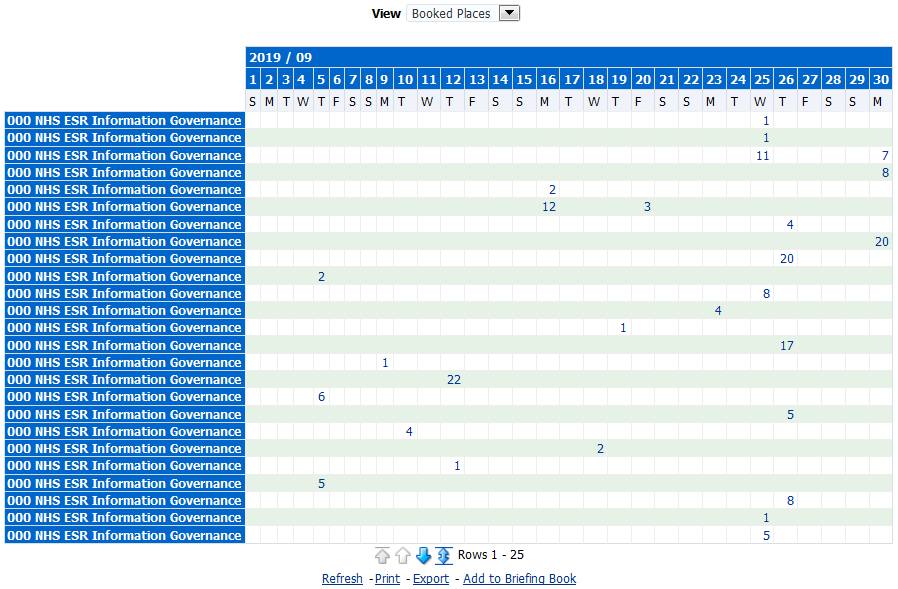
Class Delegate List
Description
The Class Delegate List Report is used by the HR/Training team to determine the list of delegates attending the Class selected.
Data Items
| Primary Category | Primary Sub-Category |
|---|---|
| Course | Delivery Mode |
| Title | Start Date |
| End Date | Start Time |
| End Time | Primary Trainer |
| Primary Venue | Title |
| First Name | Last Name |
| Preffered Name | Internal/Customer |
| Organisation | Role |
| Position Title | Supervisor |
| Customer Name | Address |
| Phone Number | Contact Full Name |
| Places | |
| In Certification | Enrolment Status Name |
| Special Requirements |
Prompts
Date Between
In Certification
Learner Group
Long Term Absence Type
Long Term Absence >= (Days)
Column Selectors
None
Example Screenshot
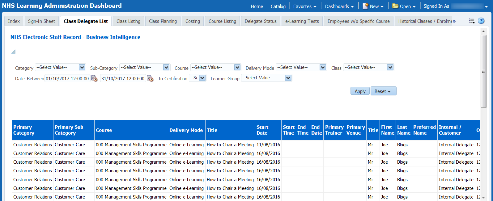
Class Listing
Description
This tab provides users with a detailed Class List defined by the Class Start Date prompt available within the Dashboard Prompts
Data Items
| Course | Delivery Mode |
|---|---|
| Primary Venue | Internal Delegates |
| Customers | All Delegates |
| Places Remaining | Cancellation Reason |
| Class Cancellation Risk | Event Status |
| Category | Sub-Category |
| Title | Primary Trainer |
| Start Date | End Date |
| Start Time | End Time |
| Enrolment Start Date | Enrolment End Date |
| Maximum Attendees | Minimum Attendees |
| Enable Learner Access | Last Updated By |
| Offering Name | Last Updated Date |
| OLM Data Group |
Assumptions
- The Internal, External and Total Delegate counts are made up of delegates where the current enrolment status is ‘Completed’, ‘Not Completed’ or ‘Confirmed’.
- Non Online e-Learning Classes will be selected where the class start date falls between Class Start Date Prompts.
- Online e-Learning Classes will be selected where the Class From Date is Less than the To Date Prompt and the Class End Date is Greater than the From Date Prompt.
Cancellation Risk colour is calculated as below:
Red Delegates = 0 or < Minimum Delegates
Amber No. Delegates Between Minimum and 75% of Maximum
Green Between 75% of Maximum and Maximum
None Other (e.g. No. Delegates = Maximum)
Prompts
Event Status
Competency
*Exclude National? (default: Yes)
Restrict to Closed for Enrollment with Available Spaces
Enrollment Status to include in 'All Delegates Count'
Example Screenshot
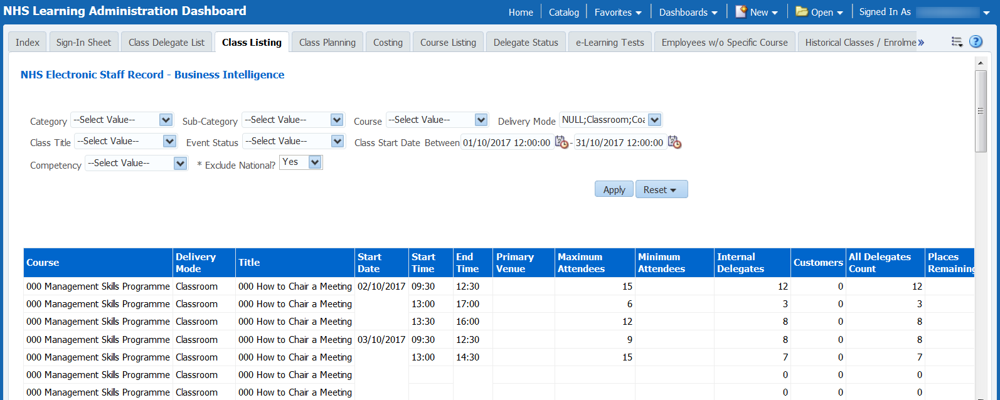
Class Planning
Description
This analysis shows the number of assignments that require a competency (and have not currently achieved it) alongside the number of spaces available on classes in the future that would award that competency.
Note: This analysis excludes e-Learning and is only useful where organisations have populated the 'Maximum Attendees' against each class. Users are able to click on the number of spaces available to see the classes for which there are spaces available.
Data Items
| Competency | Required (Count) |
|---|---|
| Available Places (Count) | Ratio |
Prompts
Competency
Number of Days to Look Forward (based on Class Start Date)
Column Selectors
None
Action Links
When clicking on the available places total, users are navigated to the Supply of Competencies Detail analysis which shows the available classes and spaces which will deliver the competency.
Example Screenshot
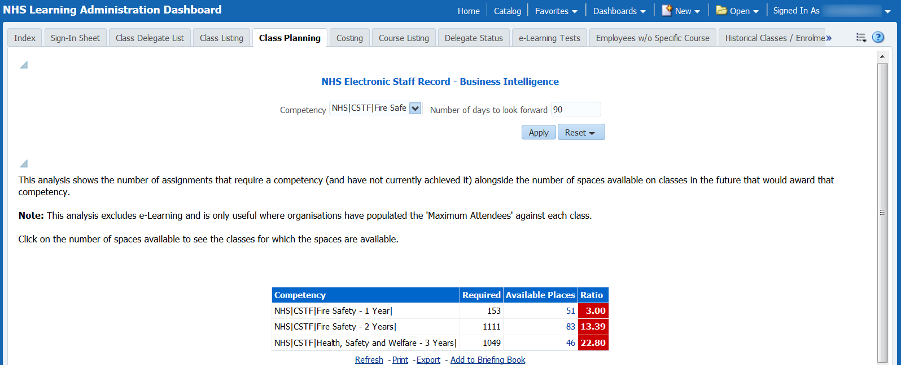
Class Enrolment Method
Description
This analysis shows the different methods used to enrol learners onto classes over a period of time. It is designed to help Learning Administrators promote self-enrolment via Employee Self Service.
Data Items
| Title | Description |
|---|---|
| Total Enrolment Count | |
| Auto Enrolment | Number of enrolments made by Auto Enrol |
| Learning Administration | Number of enrolments made by Learning Administrators |
| Class Administration | Number of enrolments made by Class Administrators |
| Employee Self Service | Number of enrolments made via Employee Self Service |
| Manager, Supervisor and Administrator Self Service | Number of enrolments made via Manager, Supervisor and Administrator Self Service |
| Auto Enrolment % | Number of enrolments made by Auto Enrol / Total Enrolment Count * 100 |
| Learning Administration % | Number of enrolments made by Learning Administrators / Total Enrolment Count * 100 |
| Class Administration % | Number of enrolments made by Class Administrators / Total Enrolment Count * 100 |
| Employee Self Service % | Number of enrolments made via Employee Self Service / Total Enrolment Count * 100 |
| Manager, Supervisor and Administrator Self Service % | Number of enrolments made via Manager, Supervisor and Administrator Self Service / Total Enrolment Count * 100 |
Prompts
Organisation
Staff Group
Job Role
Person Type
Employee Person Type
Enrolment Date Between
View Selectors
Line Graph (Default)
Bar Graph
Example Screenshot
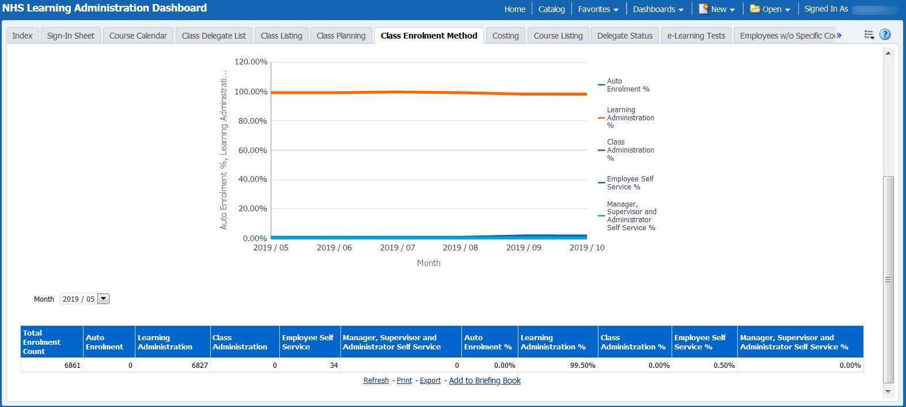
Costing
Description
This report provides authorised reporting users with information in order to compare budgeted and actual costs of training at course and class level and to view the costs of training in terms of resources used and student attendance.
Data Items
| Course | Sponsor |
|---|---|
| Budget Cost | Actual Cost |
| National Funding Body | Local Funding Body |
| Funding Amount | Class Type |
| Class Title | Class Status |
| Sponsor | Start Date |
| End Date | Budget Cost (class) |
| Actual Cost (class) | Class Resource Cost |
| Price |
Prompts
Enrollement Status
Class Status
Class Start Date Between
Column Selectors
None
Example Screenshot
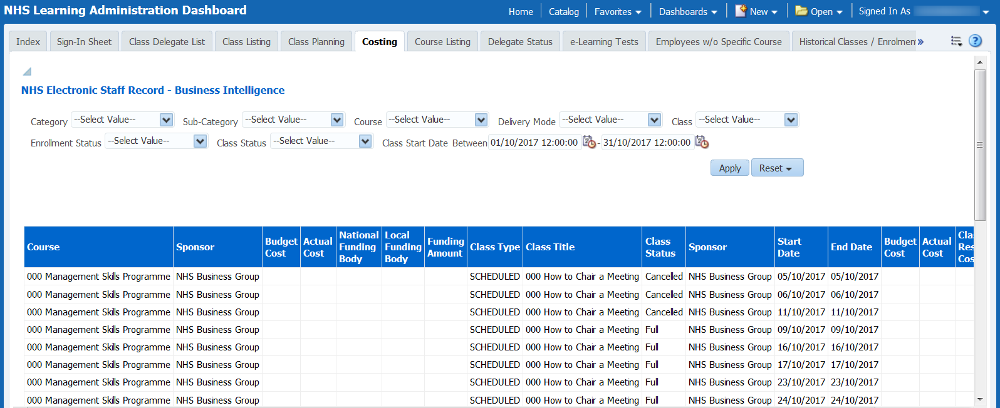
Course Listing
Description
The course listing report provides learning administrators with a list of all current courses and their details (e.g. competencies assigned, waitlist setting etc).
Data Items
| Course | Start Date |
|---|---|
| End Date | Competency |
| Proficiency Level | Status |
| Competency Update Setting | Course Code |
| Auto-Enrollment Opt Out | Deactivate Waitlisting |
| Primary Category | Primary Sub-Category |
| Creation Date | Creation By |
| Last Updated Date | Last Updated By |
Prompts
Auto-Enrollment Opt Out
Deactivate Waitlisting
Competency
Competency Update Setting
Include Historic Courses
Show only Courses with no Classes within period
Class Start Date Between
Column Selectors
None
Example Screenshot
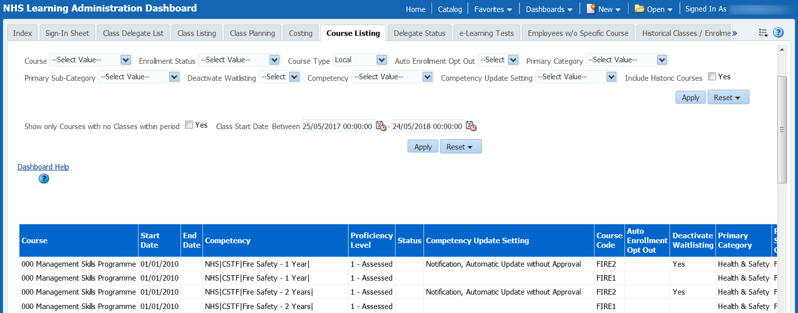
Delegate Status
Description
This analysis is designed to provide HR staff, Trainers and Managers with information about the status of the course, class or classes selected. Users can choose whether to include empty classes or not. Please note: This analysis updates overnight.
Prompts:
Course(s)
Date Between
Learner Group
Include Empty Classes? (default: No)
Column Selectors:
Group by Course or Class
Assumptions:
- Non Online e-Learning Classes will be selected where the class start date falls between the between the Date Prompts.
- Online e-Learning Classes will be selected where the date first played falls between the Date Prompts.
Data Items
| Course | Places |
|---|---|
| Class | Status |
Example Screenshot
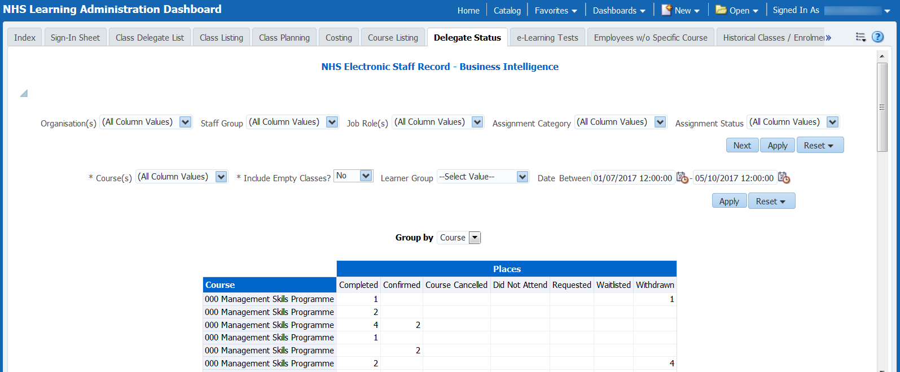
e-Learning Tests
Description
The e-Learning Test report provides Class Trainers with a summary of delegate’s scores from online tests. Classes are returned where the Date First Played falls between the available Date Prompt.
Data Items
| Category | Sub-Category |
|---|---|
| Course | Class |
| Delegate Name | Employee Number |
| Organisation | Job Role |
| Enrollment Status | Enrolled Date |
| Test Date | Date First Played |
| Last Attempt Date | Player Status |
| Time | Mastery Score |
| Attempts | Score |
Prompts
Training Centre
Delegate Name is LIKE
Date between
Column Selectors
None
Example Screenshot
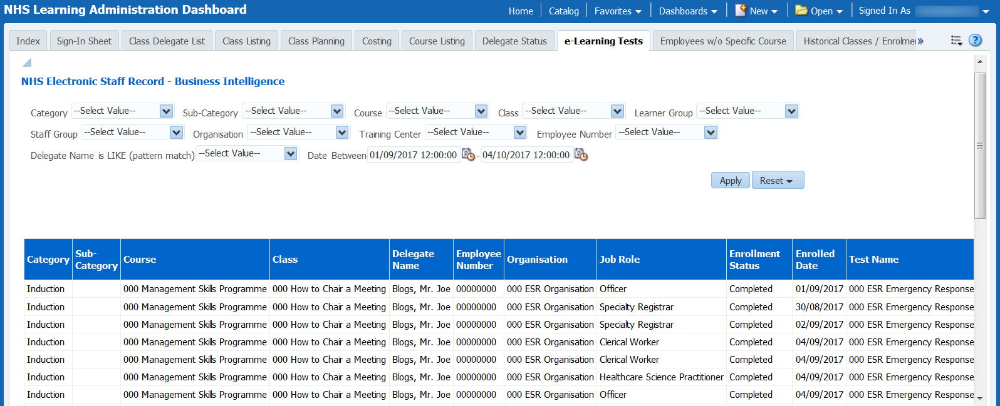
Employees Without a Specific Course
Description
This report provides authorised reporting users with details of employees who have not attended a specific Course(s).
Note: The Employee Course Completions report enables users to view employees that have not yet completed a number of courses. This report is designed to enable users to view who hasn’t completed all of the course(s) selected.
Prompts:
Course
Date Between
Column Selectors:
Org Level (default: Org L2)
Org Level (Default: Org L13)
Org Level
Data Items
| Employee Number | Last Name |
|---|---|
| First Name | Title |
| Staff Group | Role |
| Organisation | Org L1-13 |
| Position Title | Supervisor |
Example Screenshot:
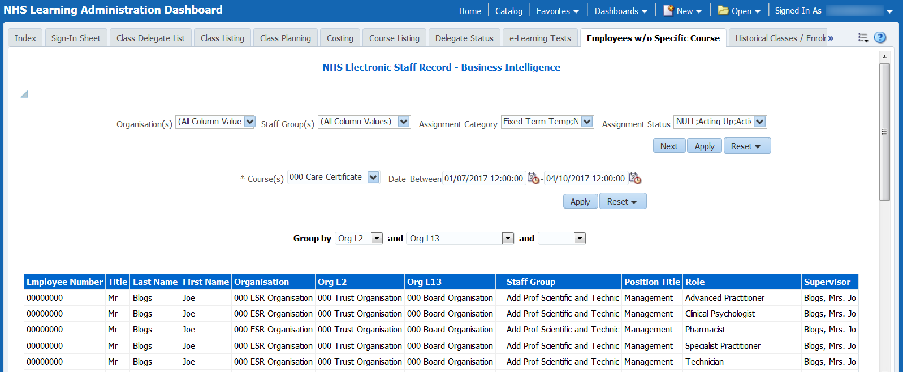
Historical Classes/Enrolments Not Updated
Description
This analysis lists classes and the number of enrolments against each that have not been updated to a correct status post-event. By clicking on the class name, the employee detail is shown in the adjacent analysis.
Data Items
| Class Name | Number of Enrolments |
|---|---|
| Start Date | Employee Number |
| End Date | Delegate Name |
| Status | Enrolment Status |
Table Prompt
Class Name
View Selector
None
Example Screenshot
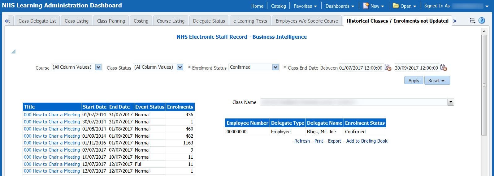
Actions
None
Learning Record (All Delegates)
Description
This worksheet provides users with information regarding classes attended for all delegates based on when the learning took place (rather than current employment status). Where the class was e-Learning then the Date Last Played is used, where the delegate was an external learner then Completion Date is used otherwise the analysis is based on Class End Date.
- For Shared Training Centre (STC) Providers, the Learning Record report will include enrolees from the STC Customer. For enrolees from the STC Customer it will only display the classes that are run by the STC Provider, not the enrolee’s entire learning history.
- When the report is run by a STC Customer, the report will include learning records that their employees have completed with the STC Provider.
Data Items
| Delegate Name | Employee Number |
|---|---|
| Organisation | Staff Group |
| Supervisor | Mobile Phone Number |
| Category | Sub-Category |
| Class Name | Delivery Mode |
| Class Start Date | Course |
| Class End Date | Date Placed |
| Duration | Status Changed By |
| Enrollment Status | In Certification |
| Date Status Changed | Supplier |
| Customer | Person Type |
| Actual Termination Date | Cost External (£) |
| Cost Student (£) | Date First Played |
| e-Learning Completion Date | Player Status |
| Player Time | Mastery Score |
| Score | Special Requirements |
| Enrollment ID | External Learning Flag |
| Primary Trainer | Moved to History |
| Primary Venue Name | Change Reason |
| Org Levels 1-13 | Applicant Number |
Prompts
Customer
Course(s)
Delivery Mode
Enrolment Status
Delegate Name is LIKE (pattern match)
Employee Number
Person Type
Organisation
Staff Group
Primary Category
Primary Sub-Category
Learner Group
External Learning
* Date Between
Column Selectors
None
Example Screenshot
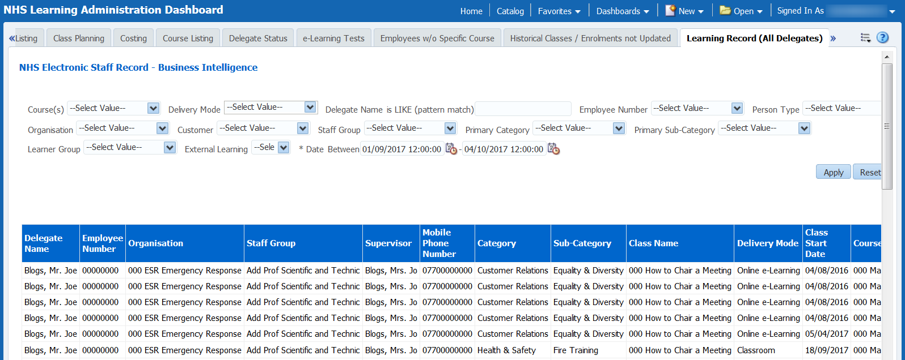
Monitoring
Description
This analysis is designed to show summary counts of learning enrolments grouped by a range of protected characteristics including Gender, Ethnic Origin and Disability. Users will be prompted to select a course using the Course prompt and a Date range.
Data Items
| Gender | Disability |
|---|---|
| Ethnic Origin | Assignment Category |
| Employee Category | Age Band |
| Sexual Orientation | Religious Belief |
| Staff Group | Organisation |
| Job Role | Org L1-7 |
| Course | Delivery Mode |
Prompts
Organisation(s)
Staff Group
Job Role(s)
Assignment Category
Assignment Status
Course(s)
Delivery mode
Date Between
Group by
Action Links
None
Example Screenshot
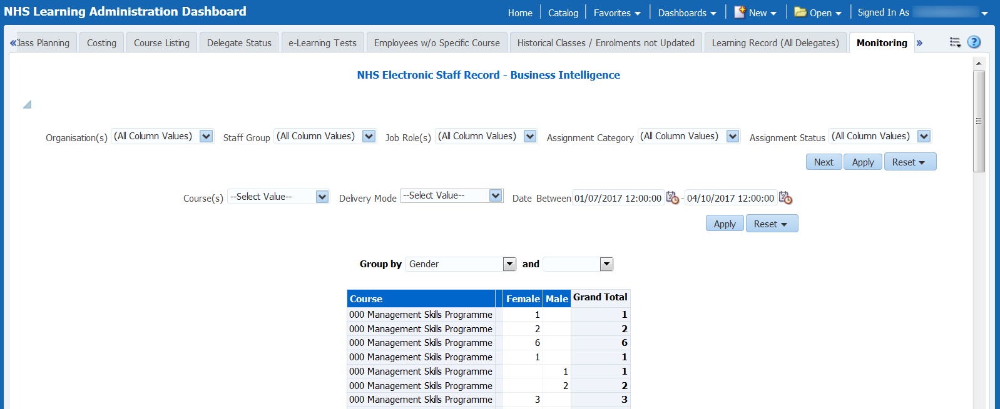
Online Test Analysis
Description
The Employee Online e-Learning Test Analysis report provides Class Trainers with a summary of delegate’s scores from online tests.
Data Items
| Category | Sub-Category |
|---|---|
| Course | Mastery Score |
| Maximum Score | Minimum Score |
| Standard Deviation | Total Learners |
| Learners Passed | Learners Failed |
| Learners Completed | Learners Incomplete |
| Learner Average Time | Learner Average Score |
| Total Number of Attempts | Average Score |
| Total Time | Questions Attempted |
| Questions Correct | Questions Incorrect |
| Questions Skipped | Class |
| Test Name | First Performance Date |
| Last Performance Date |
Prompts
Test Name
Column Selectors
None
Example Screenshot
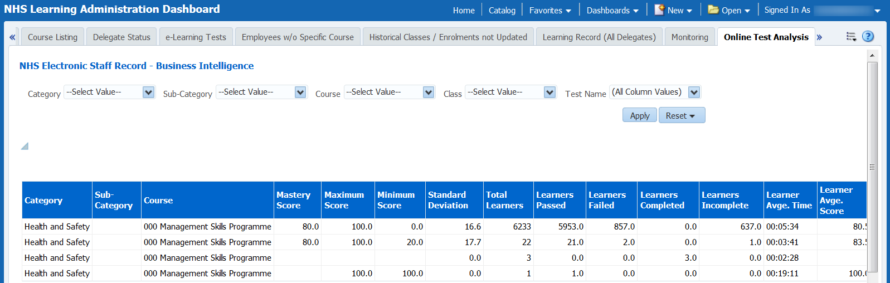
Player Performance Summary
Description
The Player Performance Summary worksheet provides Learning Administrators with a summary of the variance of results achieved on e-learning courses they offer.
Data Items
| Course | Name |
|---|---|
| Mastery Score | Minimum Score |
| Maximum Score | Average Player Score |
| Standard Deviation | Average Time |
| Longest Time | Total Learners |
| Total Performances |
Prompts
Player Status
Column Selectors
None
Example Screenshot
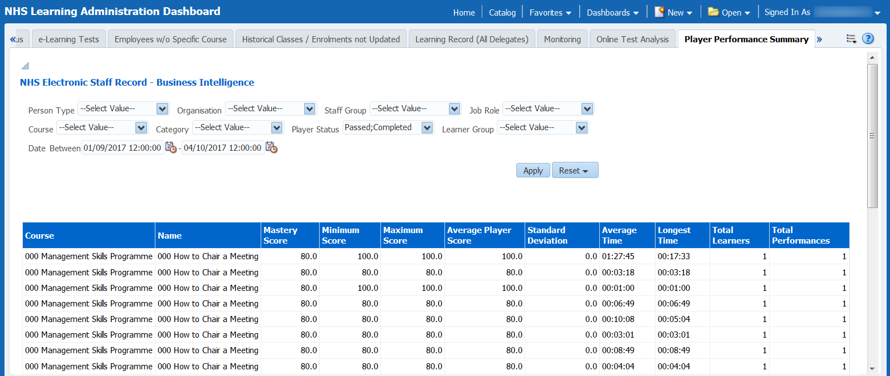
Player Status Analysis
Description
The Player Status Analysis report provides a summary to learning administrators of the number of enrolments at a specific status on the e-Learning courses they offer.
Data Items
| Course | Learning Object |
|---|---|
| Player Status |
Prompts
Course
Learner Group
Column Selectors
None
Example Screenshot
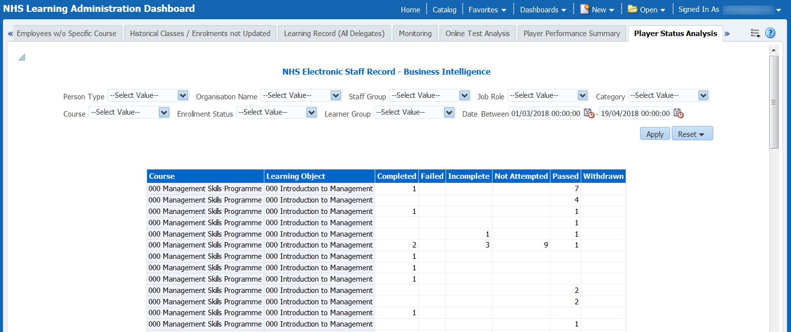
Selective Course Completions
Description
This analysis is designed to be a replication of the 'Employee Course Completions' report from Discoverer. Simply select the courses you wish to report on along with a date range, and the report returns a row for each person with the date they completed the course along with assignment details effective as at today's date.
Data Items
| Employee Number | Assignment Number |
|---|---|
| Employee Name | Assignment Category |
| Assignment Status | Position |
| Staff Group | Organisation |
| Job Role | Course |
| Org L1-13 | Employee Latest Start Date |
| Pay Grade | Email Address |
Prompts
Course(s)
Date Between
Action Links
None
Example Screenshot
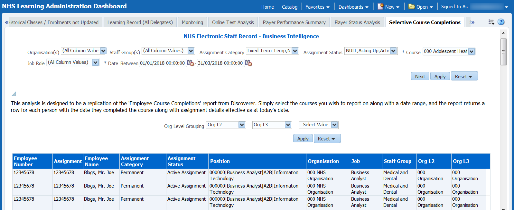
Study Leave
Description
This page of the dashboard provides the capability to analyse employee study leave and provide details of absence due to study decreasing or increasing leave and associated training record history. Depending on the user prompt selection, either the decreasing or increasing analysis will display.
Data Items
| Employee Name | Employee Number |
|---|---|
| Staff Group | Absence Type |
| Absence Reason | Absence Start Date |
| Absence End Date | Calendar Days Lost |
| Study Leave Allocation | Number of Days Taken |
| Number of Days Remaining | Course Name |
| Successfully Attended | Failure Reason |
| Competencies Gained | Proficiency Level Name |
| Course Exam Fee Amount | Course Exam Fee Amount Percentage |
| Study Allocation Start Date | Course Venue |
| Course Location |
Prompts
Employee Number
Employee Name
Absence Start Date
Absence End Date
*Absence (Study Leave) Type (required)
Column Selectors
None
Example Screenshot
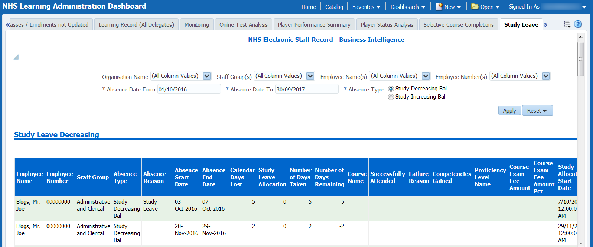
Percentage Trained on Course
Description
This analysis returns the number of primary assignments (as at today) that have completed a course, or one of a number of courses. Select a course using the prompts above and a date range for when employees should have completed the course. Selecting multiple courses will mean the analysis returns the number of assignments that have completed any of those courses.
Data Items
| Title | Description |
|---|---|
| Headcount Completed | |
| Headcount Not Completed | |
| Percentage (Completed) | Headcount of Employees who have completed a course / Total Headcount * 100 |
| Percentage (Not Completed) | Headcount of Employees who haven’t completed a course / Total Headcount * 100 |
Prompts
Organisation(s)
Staff Group
Job Role(s)
Assignment Category
Assignment Status
Course(s)
Date Between
Group by
Action Links
None
Example Screenshot
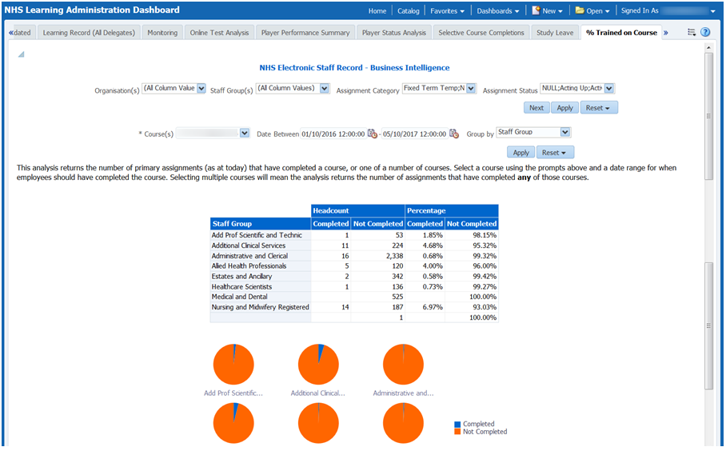
Individual Learning Path
Description
This analysis allows users to analyse the subscriptions and status of course enrolment of an individual leaner subscribed on Learning Paths.
Data Items
| Learning Path Name | Completion Type |
|---|---|
| Start Date | Course |
| End Date | Course Completion Target Date |
| Learning Path Section |
Prompts
* Learning Path Name
* Subscription Status
* Path Section
Learner Name
Column Selectors
None
Example Screenshot
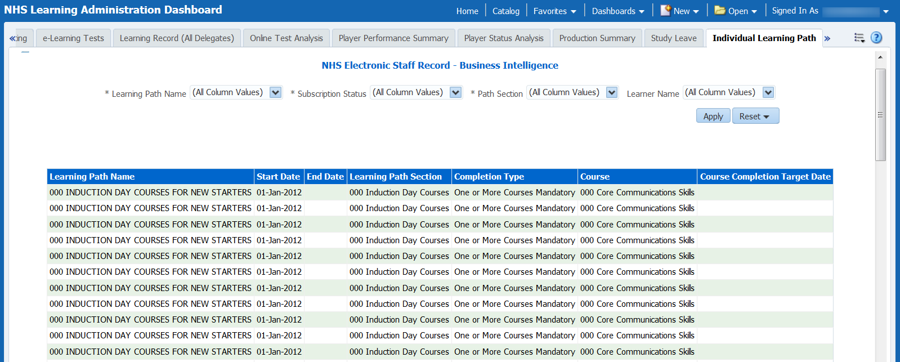
Learning Path Subscriptions
Description
This analysis allows users to analyse the subscriptions and status of course enrolments of those people subscribed on a Learning Path.
Data Items
| Learning Path Name | Job Role |
|---|---|
| Learning Path Start Date | Subscription Status |
| Learning Path End Date | Completion Target Days |
| Title | Expected Completion Date |
| First Name | Completion Date |
| Last Name | Total Courses in Sections |
| Organisation | Total Mandatory Courses |
| Staff Group | Total Mandatory Courses Completed |
| Email Address |
Prompts
Category
Sub Category
Learning Path Name
Learner Group
* Subscription Date Between
Column Selectors
None
Example Screenshot
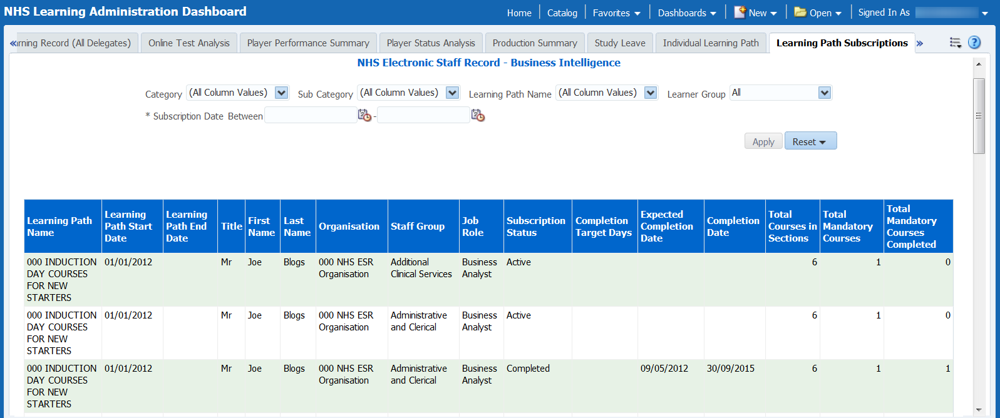
Learning Objects Listing
Description
This analysis return a list of local learning objects associated with current (open ended) courses.
.
Data Items
| Course | Mime Type |
|---|---|
| Learning Object Name | Author |
| Identifier | Starting URL Exists |
| Parent Learning Object Exists | Starting URL |
| Published Status | Open in New Window |
| Tracking Type | Creation Date |
| Duration | Created By |
| Description | Last Updated Date |
| Objectives | Last Updated By |
| Audience | Course Start Date |
| Hardware / Software Requirements | Course End Date |
| Mastery Score | Local / STC |
Prompts
Identifier
Learning Object Name
Created By
Last Updated By
Course
Course Start Date Between
Example Screenshot
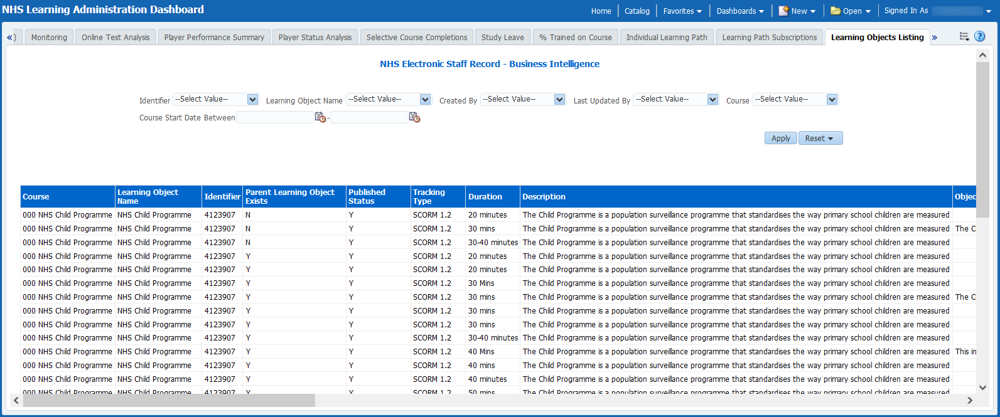
Apprenticeships Summary
Description
Available on this tab are a number of summary analyses designed to provide high level information of employees undertaking Apprenticeship at a specified report effective date or period. The data returned is for employees whose EIT Apprenticeship details are populated in ESR and does not include those on an Apprentice Job Role which is no longer valid. Organisations are therefore advised to record Apprenticeships data using the Assignment EIT Apprenticeship functionality available in ESR to ensure apprenticeships are being reported correctly. Please note that this tab is also available in the NHS Staff in Post Dashboard.
Prompts
Effective Date
Apprentice Type
Status
Restrict to Current Employment (Yes: Optional)
Include Leavers for Previous Two Years (Yes: Optional)
Summary
Description
This analysis is designed to show FTE, Headcount (Default) and Headcount percentage of employees undertaking Apprenticeship at a specified report effective date grouped by Staff Group, Organisation Levels 1-13, Pay Grade, Age Band and a number of EIT Apprenticeship fields.
Data Items
| Staff Group | Apprenticeship Level |
|---|---|
| Organisation Level(s) 1-13 | Framework Standard |
| Staff Group | FTE |
| Pay Grade | Headcount |
| Age Band | Headcount % |
| Apprentice Status | |
| Apprentice Type | |
| Main Training Provider |
View Selector
View as Column Graph (Default) or Table
Example Screenshot
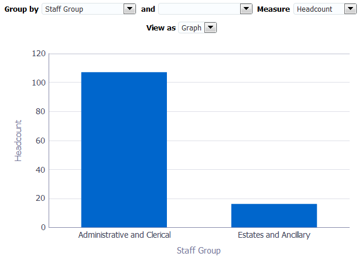
Apprenticeships Trending by Status
Description
This analysis is designed to show the number of Apprenticeships on a monthly basis as at the last day of the month, defaulted to one year ago from the last day of previous month.
Data Items
| Apprentice Status | Month |
|---|---|
| Headcount |
View Selector
View as Line Graph (Default) or Pivot Table
Example Screenshot
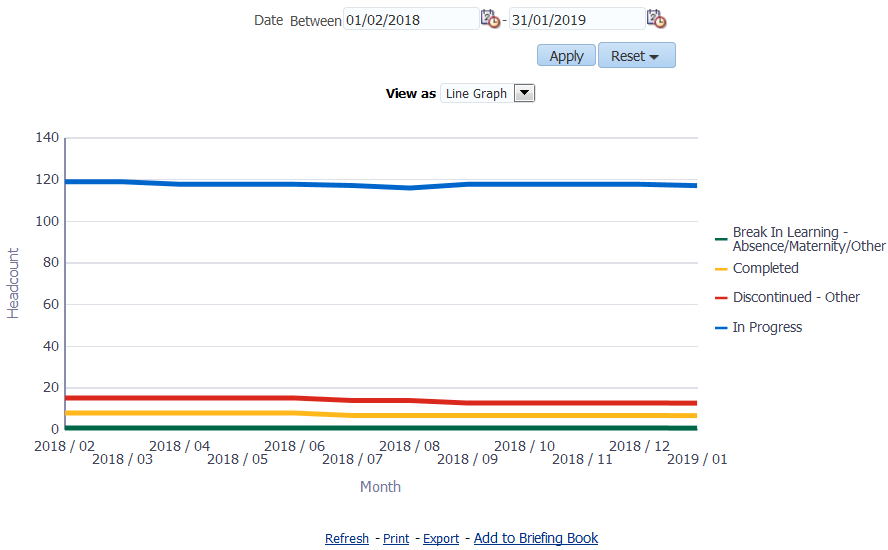
Apprenticeships Detail
Description
The Apprenticeships detail analysis returns a list of employees undertaking Apprenticeship within the Organisation. Only employees whose EIT Apprenticeship details are populated in ESR are returned and does not include those on an Apprentice Job Role which is no longer valid. Organisations are therefore advised to record Apprenticeships data using the Assignment EIT Apprenticeship functionality available in ESR to ensure apprenticeships are being reported correctly. Please note that this tab is also available in the NHS Staff in Post Dashboard.
Data Items
| Employee Number | Position Title |
|---|---|
| Assignment Number | FTE |
| Last Name | Contract Hours |
| First Name | Pay Grade |
| Gender | Organisation Level 1-13 |
| Email Address | Cost Centre Org L1-12 |
| Assignment Category | Apprentice Type |
| Assignment Status | Apprenticeship Level |
| Primary Assignment | Framework Standard |
| Supervisor Name | Status |
| Supervisor Email Address | Start Date |
| Staff Group | Proposed End Date |
| Role | Actual End Date |
| Occupation Code | Main Training Provider |
| Area of Work | EPA Centre |
| Location Name | Age Band |
| Position Number | Employee Latest Start Date |
Prompts
Effective Date
Apprentice Type
Status
Restrict to Current Employment (Yes: Optional)
Include Leavers for Previous Two Years (Yes: Optional)
Column Selector
Organisation Level 1-13
Cost Centre Org L1-12
Example Screenshot

Employee Details
Description
This tab provides the user with a range of information relating to a specific employee as defined by the available prompts.
Note: Leavers can be returned up to 2 years prior to current date.
Prompts
Employee Name *
Assignment Number *
Employee Details
Description
This analysis is designed to show various Employee details as part of the Employee Details Dashboard Page.
Data Items
| Employee Name | Employee Address Line1 |
|---|---|
| Assignment Number | Employee Address Line2 |
| Organisation | Employee Address Line3 |
| First Name | Employee Address City |
| Last Name | Employee Address Region1 |
| Email Address | Employee Address Region2 |
| Work Phone | Employee Address Region3 |
| Home Phone | Employee Address Postal Code |
| Mobile Phone | Employee Address Country |
| Position Title | |
| Pay Grade | |
| Assignment Category | |
| FTE / Contract Hours | |
| Supervisor | |
| Location | |
| Latest Start Date |
Example Screenshot
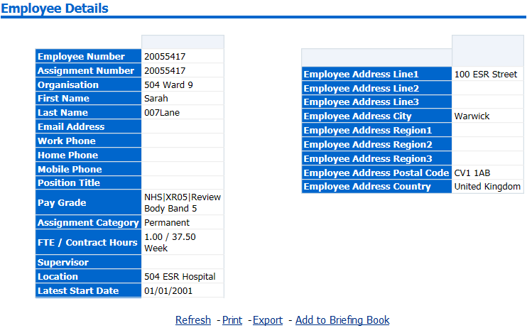
Prompts
None
Actions
None
Professional Registration Body
Description
This analysis is designed to show an Employees Professional Registration Details.
Data Items
| Professional Registration Body | Match |
|---|
Example Screenshot
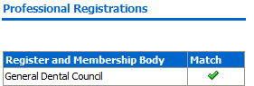
Prompts
None
Actions
None
Appraisal Reviews
Description
This analysis is designed to show an Employees Appraisal Details.
Data Items
| Review Type | Appraisal Date |
|---|---|
| Period End Date | Next Appraisal Date |
| Passed Through Gateway | Period Start Date |
Example Screenshot

Prompts
None
Actions
None
Compliance Matching
Description
This analysis is designed to show an Employees Compliance Information.
Data Items
| Competency | Level Required |
|---|---|
| Competency Match | Expiry Date |
| Level Achieved |
Example Screenshot
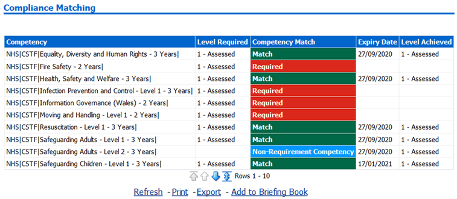
Prompts
None
Actions
None
Enrolments
Description
This analysis is designed to show an Employees Enrolment Information.
Data Items
| Course | Start Date |
|---|---|
| Enrolment Status | Completion Date |
| Delivery Mode |
Example Screenshot

Prompts
Enrollment Status
Actions
None
Certifications
Description
This analysis is designed to show an Employees Certification Details.
Data Items
| Certification Name | Progress of Certification |
|---|---|
| Certification Status | Target Date |
Example Screenshot

Prompts
None
Actions
None
Learning Paths
Description
This analysis is designed to show an Employees Learning Path Information.
Data Items
| Learning Path | Learning Path Completed Courses |
|---|---|
| Subscription Status | Start Date |
Example Screenshot

Prompts
None
Actions
None
Qualifications
Description
This analysis is designed to show an Employees Qualifications Details.
Data Items
| Qualification Type | Qualification Start Date |
|---|---|
| Qualification Title | Qualification End Date |
| Establishment |
Example Screenshot
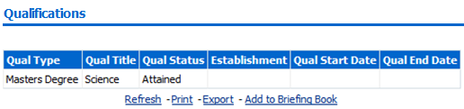
Prompts
None
Actions
None
Objectives
Description
This analysis is designed to show an Employees Objectives Information.
Data Items
| Objective Name | Target Date |
|---|---|
| Start Date | Complete (%) |
Example Screenshot
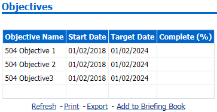
Prompts
None
Actions
None
Previous Employment
Description
This analysis is designed to show an Employees Previous Employment Information.
Data Items
| Employer Name | End Date |
|---|---|
| Start Date |
Example Screenshot

Prompts
None
Actions
None
Job History
Description
This analysis is designed to show an Employees Job History.
Data Items
| Job Role | Change Date |
|---|
Example Screenshot

Prompts
None
Actions
None
Did Not Attend Details
Prompts
Organisation(s)
Person Type(s) (Default: Employee, Employee and Applicant)
Job Role
Staff Group
Supplementary Role
Organisation Level 1-13
DNA Rate
Description
This analysis is designed to show the DNA rate of staff in the organisation on a number of courses.
Data Items
| Title | Description |
|---|---|
| Staff Group | Staff group associated with the job role in position |
| Course Name | Name of the course |
| Enrolment Count | Number of Enrolments excluding Enrolment Status = ‘Withdrawn’ |
| DNA Count | Number of enrolments with status of ‘Did Not Attend’ |
Prompts
Class Date Between (Default between first day of month 3 months ago, and last day of last month)
Enrolment Statuses (Default: Did Not Attend)
DNA Rate Limit % (Default 5)
Filters
Include non-“Online e-Learning” only.
Include enrolments where class start date is between the from and to date Prompts.
Column Selectors
Group by Course or Staff Group (Default: Staff Group).
View Selectors
View as Pie Graph, Bar Graph, Column Graph or Table (Default: Column Graph).
Formatting
Red flag or change colour to red when DNA rate is above the rate set in Prompts.
Example Screenshot
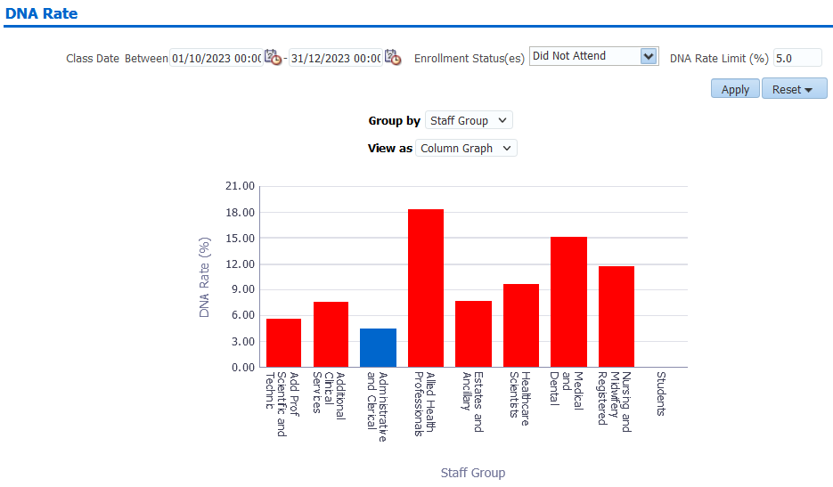
Future Enrolments
Description
This analysis is designed to show a list of staff enrolled on courses with future class start dates in the period. Default: between current date and last day of next month.
Prompts
Class Start Date Between
Data Items
| Employee Name |
|---|
| Organisation Name |
| Course Name |
| Class Start Date |
Filters
Restrict to classes occurring within the next month (prompt is available to update this).
DNA Detail
Description
This tab is designed to give users the details of each enrolment. By default the data is restricted to ‘DNA’ enrolments only, however users can change this using the prompt provided.
Data Items
| Employee Number | Staff Group |
|---|---|
| Course Name | Supervisor Name |
| First Name | Supervisor Email Address |
| Last Name | Enrolment Status |
| Email Address | Class Start Date |
| Position Title | Class End Date |
| Organisation | Change Reason |
| Organisation Level1-13 | Enrolment ID |
Data Quality
Description
Available on this tab are analyses designed to help users identify learning related data quality issues.
Prompts
Course(s)
Delivery Mode
Enrolment Status
Organisation
Staff Group
Person Type
Delegate Name is LIKE (pattern match)
Employee Number
* Class Date Between
Employees booked on two or more classes in the same offering
Description
This analysis is designed to show the details of those employees booked on two or more classes in the same offering.
Data Items
| Employee Number | Offering Name |
|---|---|
| Delegate Name | Class |
| Enrolment Status | |
| Telephone |
Example Screenshot
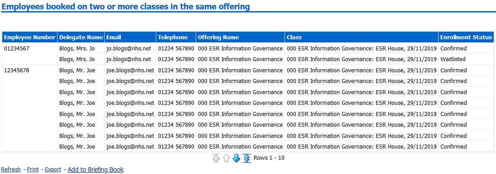